Tare
Sauce soja, mirin et sucre roux, réduite jusqu'au caramel. La plus classique.
DouxInspiré des échoppes de rue de Fukuoka et des comptoirs de gare d'Osaka, YATAI prépare un poulet décliné sous toutes ses formes, mariné pendant douze heures.
YATAI, c'est l'échoppe japonaise qui manquait à Asnières-sur-Seine. Notre poulet est mariné douze heures dans un mélange de sauce soja, saké de cuisine, gingembre frais et ail, puis frit minute dans une double panure de fécule de pomme de terre pour une croûte qui reste croustillante jusqu'à la dernière bouchée.
Cuisine 100 % maison, poulet fermier français, disponible sur place, à emporter et en click & collect. Prêt pour le voyage ?
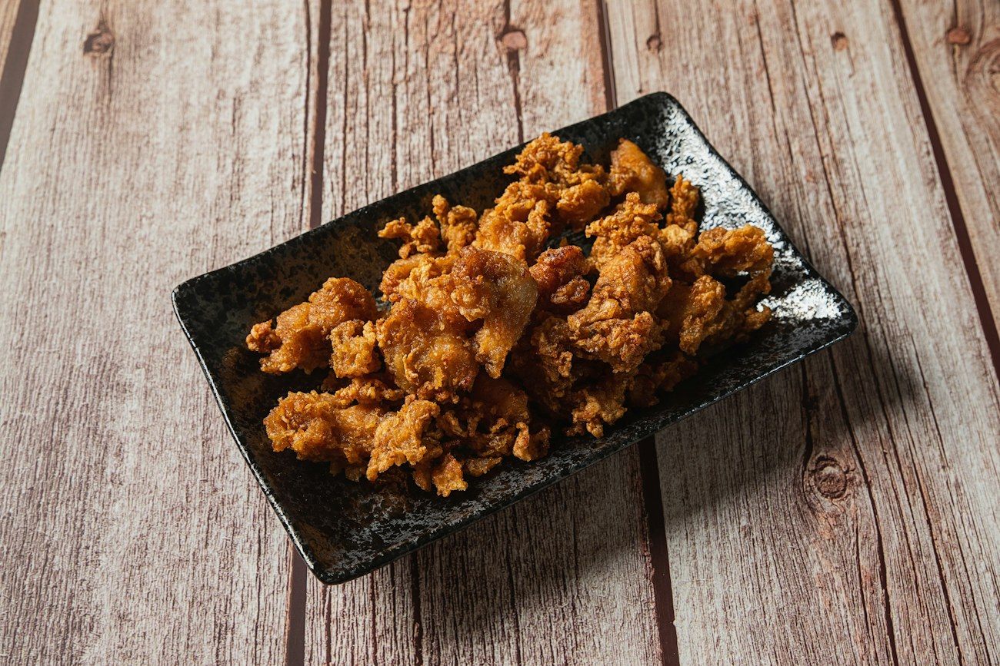
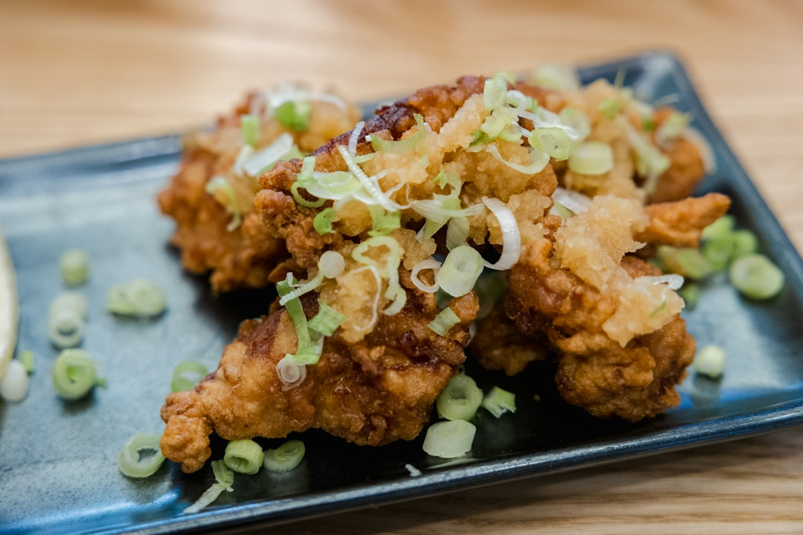
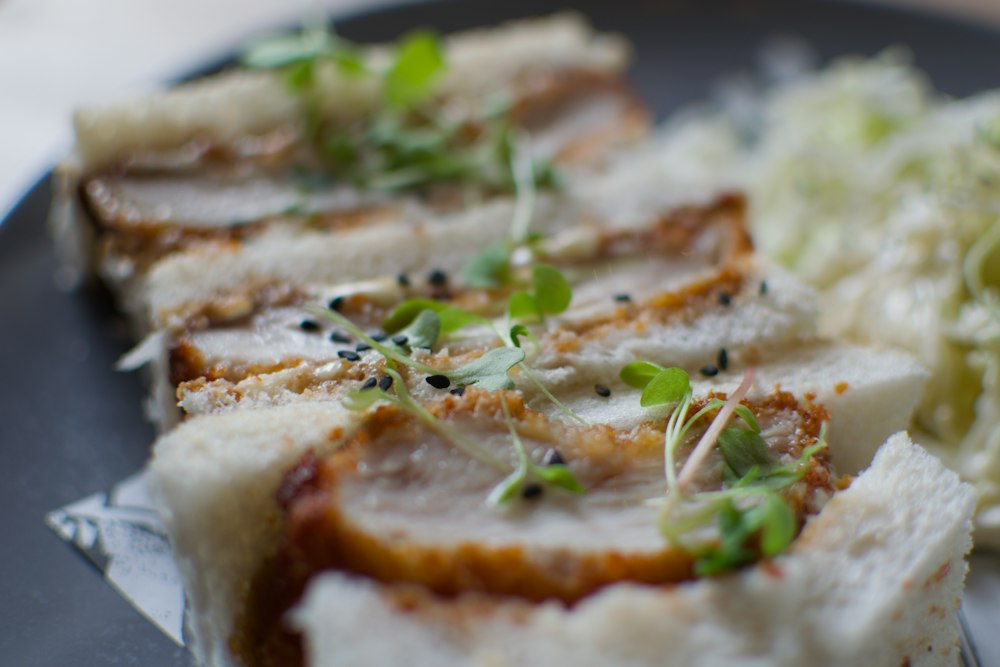
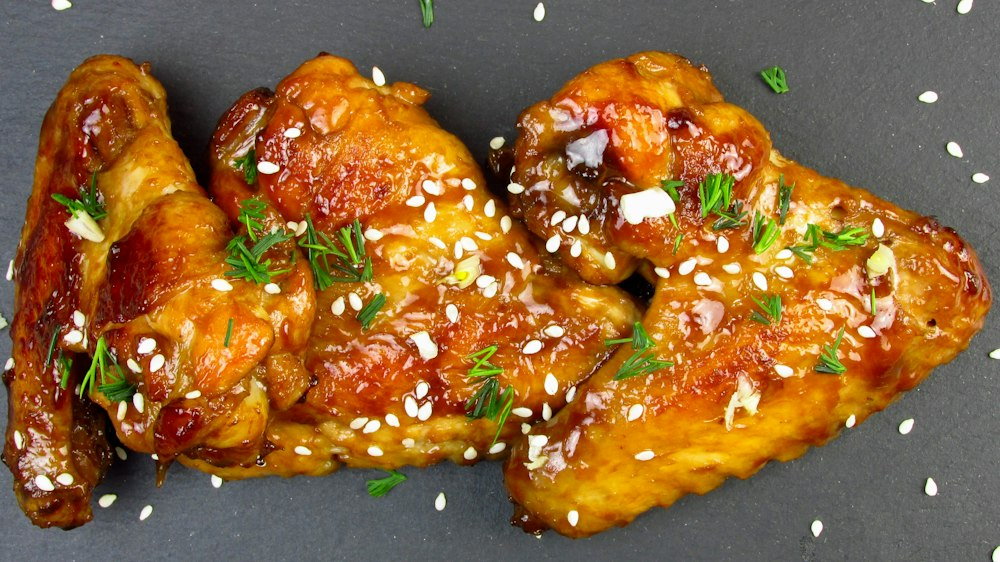
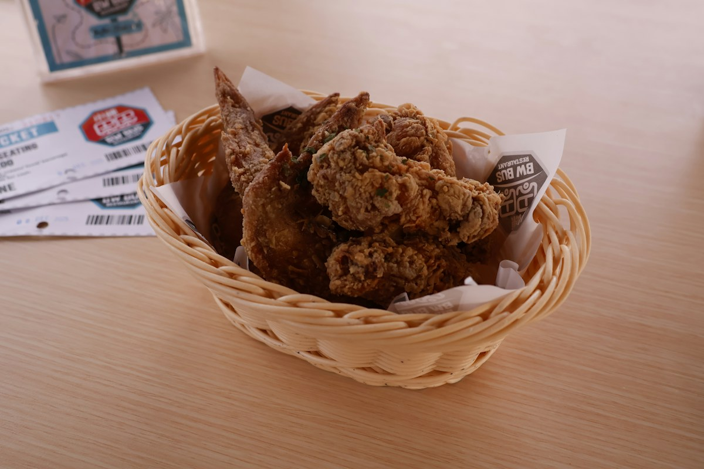
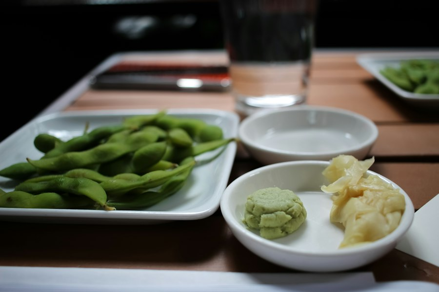
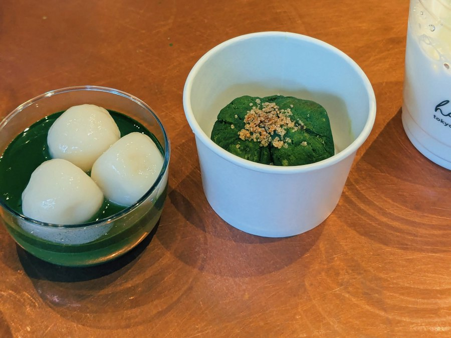
Tout est à la carte, frit à la commande. Voir la carte complète ›
Du poulet mariné, fariné à la fécule, frit deux fois. Rien à voir avec une panure occidentale.
Nos sauces ›Poulet fermier français, huile filtrée deux fois par jour, sauces préparées le matin même. Ce qui sort de la friteuse a moins de trois minutes.
Nous trouver ›Du plus doux au plus relevé. On vous plante le drapeau dans le panier.
Sauce soja, mirin et sucre roux, réduite jusqu'au caramel. La plus classique.
Doux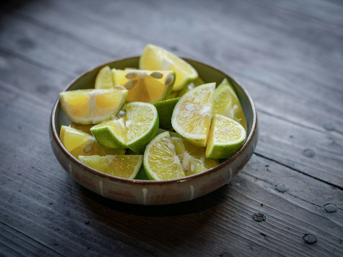
ShioSel de mer, citron jaune et huile de sésame. Pour goûter la friture nue.
Doux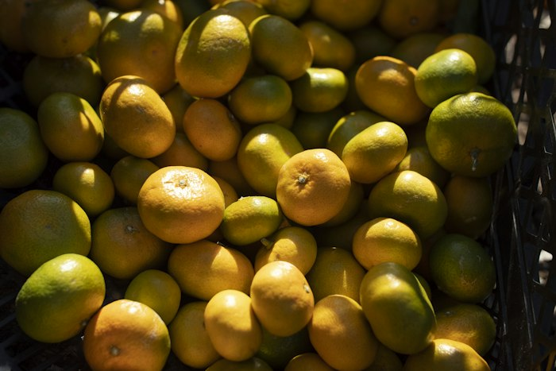
PonzuAgrumes japonais et soja léger, une pointe d'algue kombu. Frais et acidulé.
Doux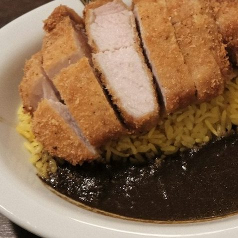
CurryLe curry japonais épais et légèrement sucré, celui des cantines de Tokyo.
Moyen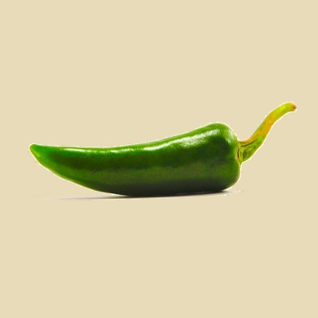
YuzuPiment vert fermenté et zeste de yuzu. Ça pique franchement, puis ça parfume.
Relevé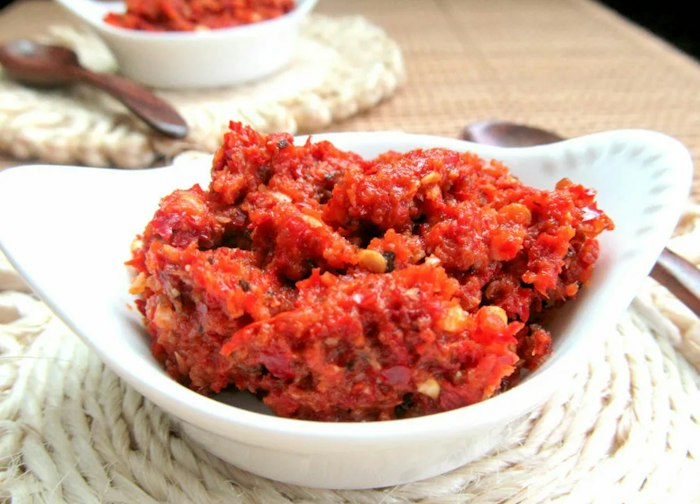
MisoMiso rouge, togarashi et ail noir. Notre sauce la plus forte, prévenez-nous.
Fort